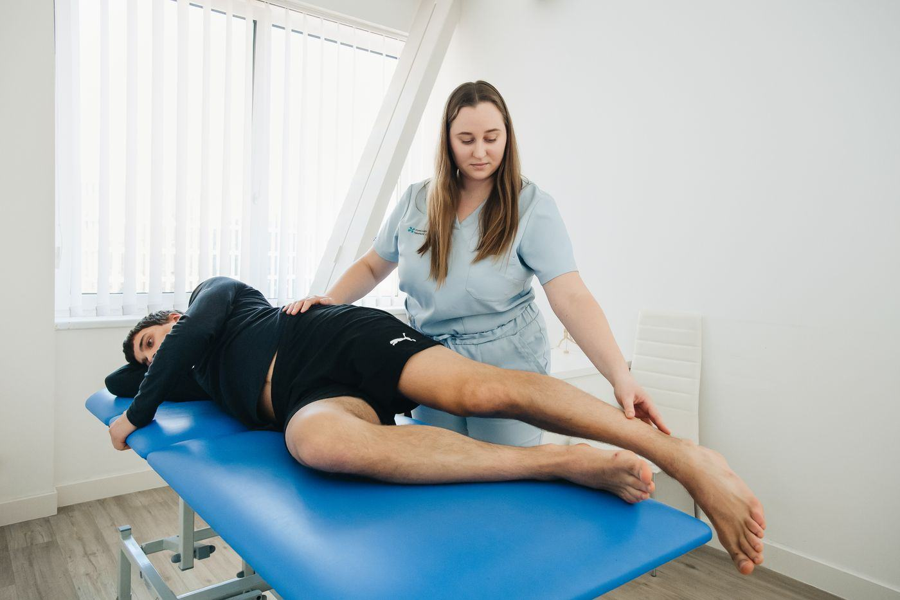

Home › Opleidingen › Therapie & sport › Sportkunde

hboTherapie & sport
Wat is Sportkunde?
Internationale naam: Sport Studies
Sportkunde is een opleiding op hbo in de groep Therapie & sport. Mensen helpen bewegen, herstellen en gezond blijven: fysio, ergo, logopedie en sport.
Wat kun je ermee?
- Fysiotherapeut
- Ergotherapeut of logopedist
- Sportcoach of leefstijlcoach (begeleider bij een gezonde leefstijl)
- Diëtist
Wat heb je ervoor nodig?
- Voor hbo: havo, vwo of mbo-4
- Natuur & Gezondheid of N&T helpt. Er zijn vaak veel aanmeldingen, dus selectie of loting.
- Het helpt als je: Contact met mensen, Geduld, Plezier in bewegen en gezondheid
Selectie of toelatingsexamen?
Bij onder meer fysiotherapie vaak selectie. Kijk bij de opleiding zelf wat er precies gevraagd wordt.
Hoe lang duurt het?
hbo: 4 jaar. Je kunt het volgen als deeltijd (naast je werk) en voltijd.
Waar kun je Sportkunde studeren?
Bij 8 scholen, onder andere in 'S-Gravenhage, Amsterdam, Eindhoven, Groningen, Haarlem, Nijmegen, Vlissingen en Zwolle:
- Christelijke Hogeschool Windesheim
- De Haagse Hogeschool
- Fontys Hogeschool
- HZ University of Applied Sciences
- Hanzehogeschool Groningen
- Hogeschool Inholland
- Hogeschool van Amsterdam
- Hogeschool van Arnhem en Nijmegen
Verwante opleidingen
- Opleiding tot Fysiotherapeut
- Opleiding voor Logopedie
- Opleiding voor Ergotherapie
- Voeding en Diëtetiek
- Huidtherapie
- Opleiding Podotherapie
- Opleiding tot Oefentherapeut
- Bachelor of Science in Osteopathie
- Orthoptie
- Toegepaste Gerontologie
Past Sportkunde bij jou? In de app zie je hoe ver elke school van je huis is, wanneer de open dagen zijn en wat je Plan B is. Je kunt hem ook op je lijst zetten.
Bekijk in de appDoe de Padvinder